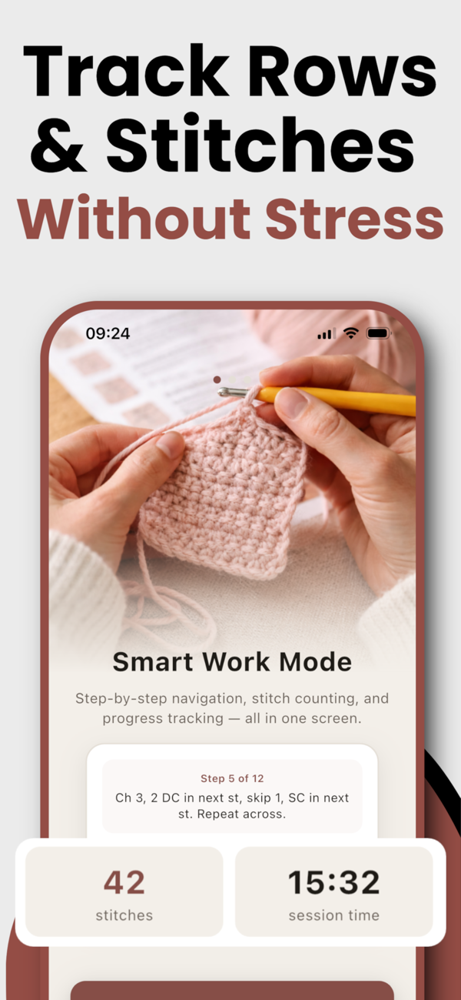
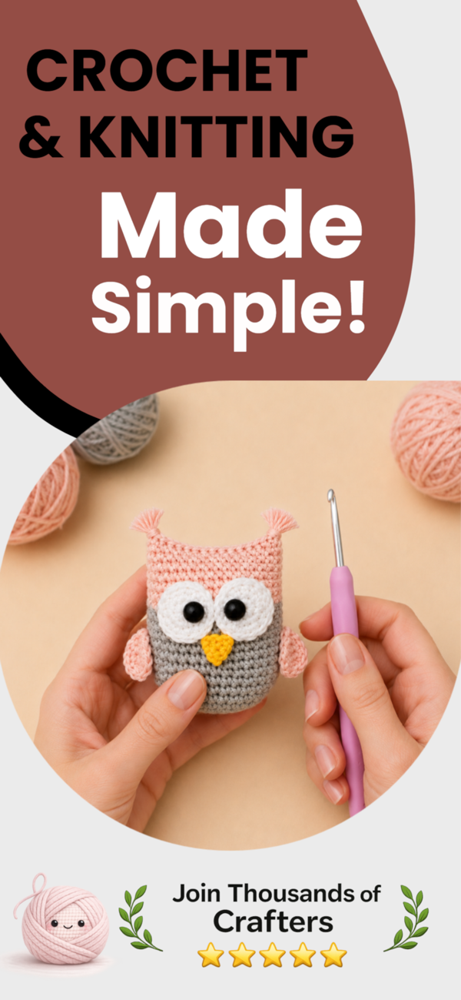
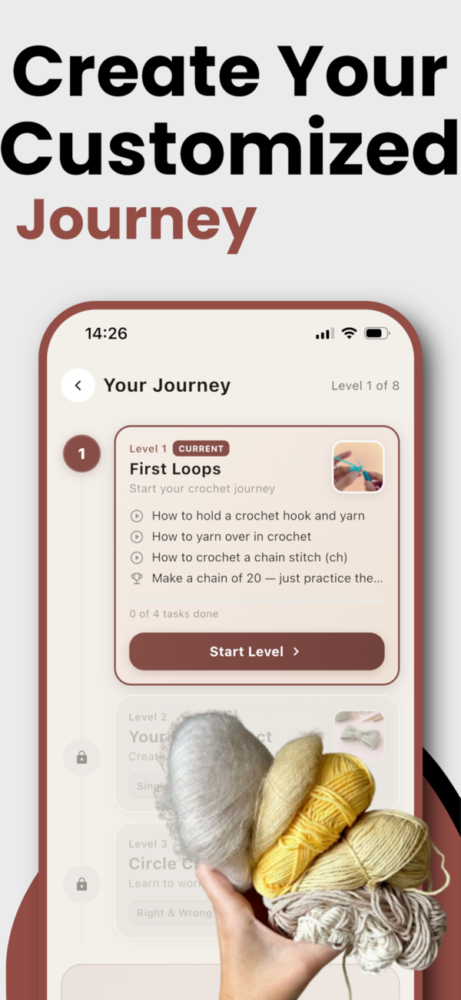
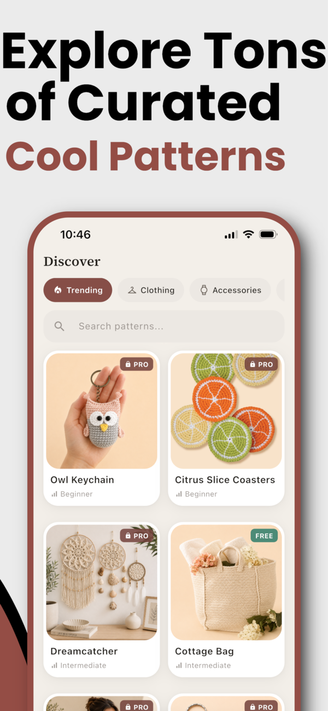
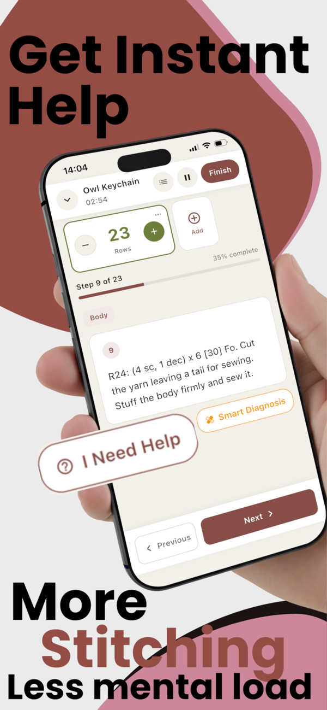
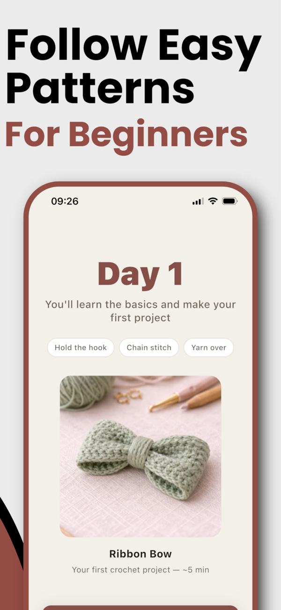
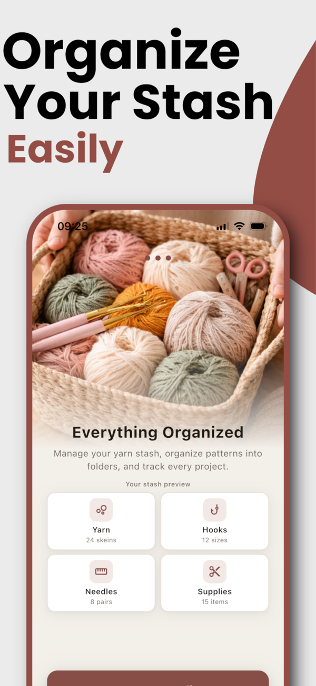
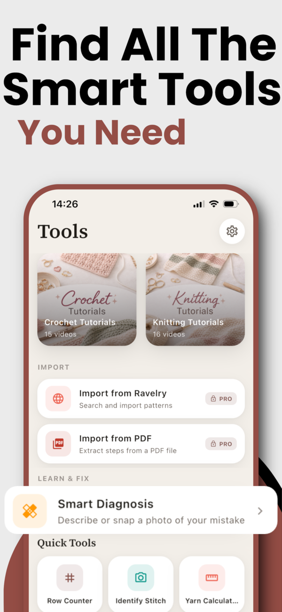
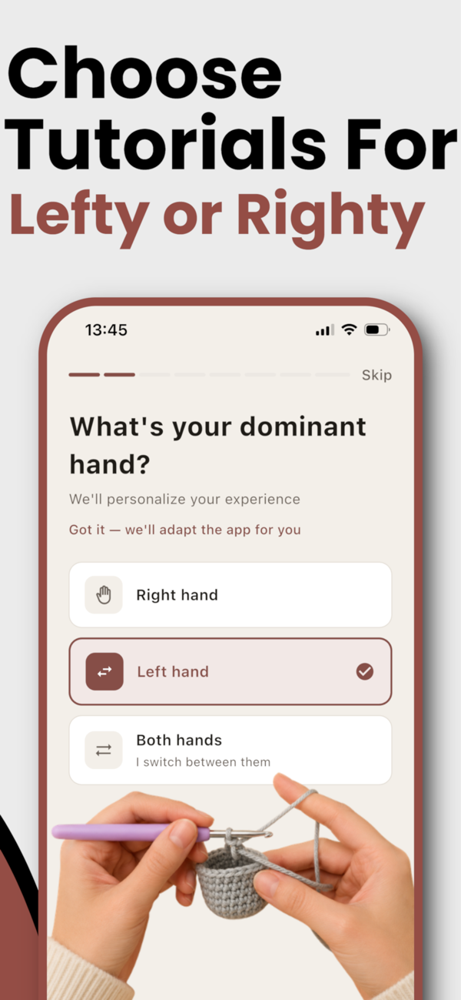

The Crochet & Knitting App That Helps You Actually Finish
Smart row counter, 500+ patterns, plain-English stitch explanations, and a yarn stash organizer — everything in one crochet app, so you never lose your place (or your motivation) again.


Everything a Crocheter or Knitter Needs — In One App
Stop juggling paper tally marks, PDF readers, YouTube tabs, and a notes app. Hooked replaces them all.
Smart Row & Stitch Counter
Multiple counters per project, expected stitch counts per row, and gentle count-check reminders that catch mistakes before they become hours of frogging.
Smart Explain
Tap any confusing row — like "sk 2 sts, (2 dc, ch 1, 2 dc) in next st" — and get a plain-English breakdown adapted to your skill level.
Patterns From Everywhere
Browse 500+ curated crochet & knitting patterns, import PDFs with smart parsing, paste text, or pull straight from your Ravelry library.
Built for Beginners
A guided learning journey with 5 starter projects and 47 step-by-step video tutorials — personalized for left- or right-handed crafters.
Yarn Stash Organizer
Log every skein, hook, needle, and supply with colors, search, and filters. Know exactly what you own before you buy more yarn.
Session Timer & Progress
Time your crafting from the Lock Screen and Dynamic Island, snap progress photos, and watch visual progress bars fill up on every project.
Take a Look Inside Hooked
From your first chain stitch to a finished sweater — here's how it looks along the way.







How Hooked Works — From Skein to Finished Object
Four steps between you and the project you'll actually finish.
Pick or import a pattern
Choose from 500+ curated patterns, import a PDF, paste text, or pull from your Ravelry library. US or UK terms — one tap to switch.
Start Work Mode
Your pattern becomes step-by-step instructions with counters attached. Confused by a row? Smart Explain rewrites it in plain English.
Stitch without stress
Tap to count rows, get stitch-count checks, and time your session from the Lock Screen. Put it down anytime — your exact place is saved.
Finish and show it off
Watch the progress bar hit 100%, review your progress photos, and start the next project from a stash you actually have organized.
Free Crochet & Knitting Guides
Real answers to the questions every crafter Googles mid-project — and how Hooked makes each one easier.
How to Read Crochet Patterns (Beginner's Guide)
Decode abbreviations, asterisks, and repeats — and never feel like a pattern is written in a foreign language again.
Read the guide → ReferenceCrochet Abbreviations Explained: sc, dc, hdc & More
The complete cheat sheet for every abbreviation you'll meet in a pattern, with US and UK versions.
Read the guide → ReferenceUS vs UK Crochet Terms: The Conversion Chart
Why a UK "double crochet" is a US "single crochet" — and how to stop ruining projects over it.
Read the guide → TechniqueHow to Count Rows in Crochet (Without Losing Your Place)
7 reliable ways to count rows and stitches — from stitch markers to a smart digital counter.
Read the guide → ToolsThe Best Crochet Row Counter App in 2026
What to look for in a row counter app — and why counting alone isn't enough to stop frogging.
Read the guide → BeginnerLearn to Crochet: A Step-by-Step Plan for Beginners
From holding the hook to your first finished project — a realistic 7-day path anyone can follow.
Read the guide → ProjectAmigurumi for Beginners: Crochet Your First Cute Toy
The stitches, supplies, and pattern-reading skills you need to make your first amigurumi.
Read the guide → OrganizationHow to Organize Your Yarn Stash (Once and for All)
A system for sorting, storing, and tracking yarn so you stop buying duplicates.
Read the guide → PlanningHow Much Yarn Do I Need? (Yardage Guide + Calculator)
Yardage estimates for blankets, scarves, hats, and amigurumi — and how to calculate your own.
Read the guide → OrganizationHow to Organize Crochet Patterns (PDFs, Ravelry & More)
Turn a chaos of screenshots, PDFs, and bookmarks into one searchable pattern library.
Read the guide → TechniqueLeft-Handed Crochet: How to Learn Without Mirroring Everything
Why most tutorials feel backwards — and how left-handed crafters can learn comfortably.
Read the guide →Frequently Asked Questions
Everything crafters ask before downloading Hooked.
What is the best crochet app for beginners?
Hooked is built for beginners: it includes 5 guided starter projects with step-by-step video tutorials inside the app, a personalized learning journey, and Smart Explain — which translates any confusing pattern instruction into plain English adapted to your skill level. Learn more →
Does Hooked have a row counter for crochet and knitting?
Yes. Hooked includes multiple row and stitch counters per project, expected stitch counts per row, and count-check reminders that catch mistakes before you have to frog hours of work. Your row and next instruction are saved automatically when you close the app. Learn more →
Can I import my own crochet patterns from PDF or Ravelry?
Yes. Hooked imports PDF patterns with smart parsing, accepts pasted text, and pulls patterns directly from your Ravelry library — then turns them into step-by-step Work Mode instructions with counters attached. Learn more →
Does the app explain crochet abbreviations like sc, dc, and hdc?
Yes. Hooked includes a glossary of 30+ crochet and 30+ knitting abbreviations, and its Smart Explain feature rewrites any full instruction — like "sk 2 sts, (2 dc, ch 1, 2 dc) in next st" — in plain English. Learn more →
Can Hooked convert between US and UK crochet terms?
Yes. A one-tap toggle switches any pattern between US and UK crochet terminology, so a UK "double crochet" is never confused with a US "double crochet" again. Learn more →
How do I keep track of my rows so I stop losing my place?
Hooked pairs tap-to-count row counters with expected stitch counts per row and periodic count-check reminders. If you put your project down for a week, the app reopens exactly where you left off — row, instruction, and progress included. Learn more →
Can I organize my yarn stash in the app?
Yes. Hooked tracks every skein of yarn with a color picker, plus hooks, needles, and supplies, with search and filters — so you know exactly what you own before buying more. Learn more →
How do I know how much yarn I need for a project?
Hooked's built-in yarn calculator estimates the yardage a project needs, and the stitch calculator and unit converter handle the rest of the math — no spreadsheet required. Learn more →
Does Hooked work for left-handed crocheters?
Yes. During setup you choose your dominant hand, and Hooked adapts its tutorials for left-handed, right-handed, or ambidextrous crafters. Learn more →
Is Hooked free?
Hooked is free to download and use. Hooked Pro unlocks unlimited Smart Explain, PDF and Ravelry import, unlimited projects, and all premium tools — with a 3-day free trial you can cancel anytime. Try it free →
Ready to Finish What You Start?
Join thousands of crafters using Hooked to follow patterns, count rows, and organize their yarn — all in one cozy app.
Free to download · 4.7★ from crafters like you · Pro trial: 3 days free, cancel anytime